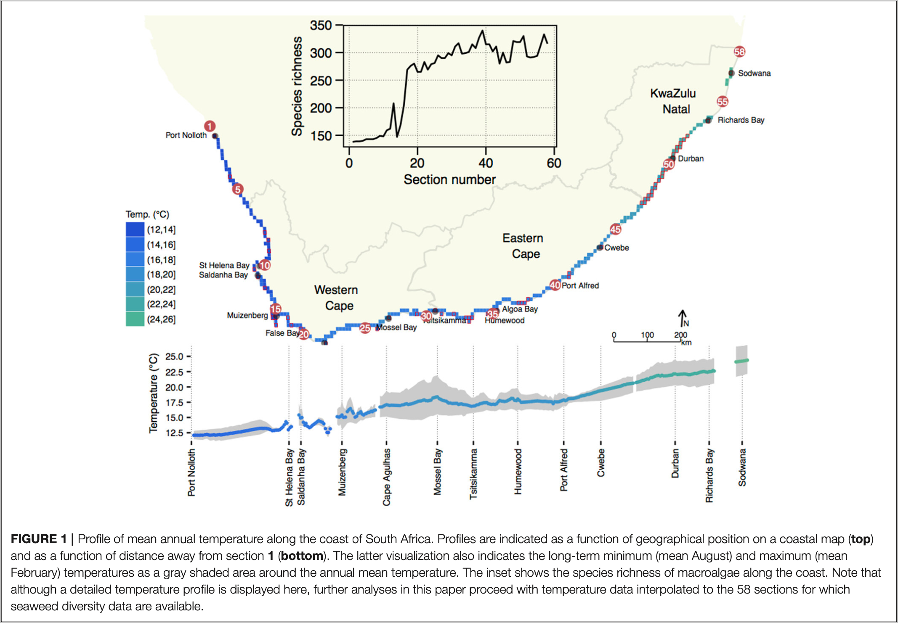

3. Quantifying Biodiversity
The Things we can do with Species Data
![]()
Biodiversity The variability among living organisms from all sources including, inter alia, terrestrial, marine and other aquatic ecosystems and the ecological complexes of which they are part; this includes diversity within species, between species and of ecosystems.
— International Union for the Conservation of Nature (IUCN), Convention on Biological Diversity
The IUCN definition considers a diversity of diversity concepts. This module looks at diversity only at the species level (species diversity). However, we can also approach macroecological problems from phylogenetic and functional (and other) diversity concepts of view. Functional and phylogenetic diversity ideas will be introduced in the BDC743 module Quantitative Ecology.
This material must be reviewed by BCB743 students in Week 1 of Quantitative Ecology.
The seaweed (Smit et al. 2017) and toy data are at the links below:
The seaweed species data –
SeaweedSpp.csvThe seaweed environmental data –
SeaweedEnv.csvThe seaweed coastal sections –
SeaweedSites.csvThe fictitious light data
light_levels.csv
1 Preparation
1.1 The South African seaweed data
In these examples, we will use the seaweed data of Smit et al. (2017). Please make sure that you read this paper. An additional file describing the background to the data is available here (Figure 1).

One of the datasets, \(Y\) (in the file SeaweedSpp.csv), comprises updated distribution records of 847 macroalgal species within each of 58 × 50 km-long sections of the South African coast (Bolton and Stegenga 2002). The dataset captures ca. 90% of the known seaweed flora of South Africa, but excludes some very small and/or very rare species for which data are insufficient. The data are from verifiable literature sources and John Bolton and Rob Anderson’s collections, assembled from information collected by teams of phycologists over three decades (Bolton 1986; Stegenga et al. 1997; Bolton and Stegenga 2002; De Clerck et al. 2005). Another file, \(E\) (in env.csv), is a dataset of in situ coastal seawater temperatures derived from daily measurements over 40 years (Smit et al. 2013).
1.2 Setting up the analysis environment
We will use R, so first, we must find, install and load various packages. Some packages will be available on CRAN and can be accessed and installed the usual way, but you will need to download others from R Forge.
1.3 A look at the data
Let’s load the data and see how it is structured:
spp <- read.csv('../data/seaweed/SeaweedSpp.csv')
spp <- dplyr::select(spp, -1)
# Lets look at the data:
dim(spp)[1] 58 847We see that our dataset has 58 rows and 847 columns. What is in the columns and rows? Start with the first five rows and five columns:
spp[1:5, 1:5]| ACECAL | ACEMOE | ACRVIR | AROSP1 | ANAWRI |
|---|---|---|---|---|
| 0 | 0 | 0 | 0 | 0 |
| 0 | 0 | 0 | 0 | 0 |
| 0 | 0 | 0 | 0 | 0 |
| 0 | 0 | 0 | 0 | 0 |
| 0 | 0 | 0 | 0 | 0 |
Now the last five rows and five columns:
| WOMKWA | WOMPAC | WRAARG | WRAPUR | WURMIN | ZONSEM | |
|---|---|---|---|---|---|---|
| 53 | 0 | 0 | 1 | 0 | 0 | 0 |
| 54 | 0 | 0 | 1 | 0 | 0 | 0 |
| 55 | 0 | 0 | 1 | 0 | 0 | 0 |
| 56 | 0 | 1 | 1 | 0 | 1 | 0 |
| 57 | 1 | 0 | 1 | 0 | 1 | 0 |
| 58 | 0 | 0 | 1 | 0 | 1 | 0 |
So, each row corresponds to a site (i.e. each of the coastal sections), and each column contains a species. We arrange the species alphabetically and use a six-letter code to identify them.
2 Species data
When ecologists talk about species diversity, they typically consider the characteristics of biological communities in a specific habitat, ecological community, or ecosystem. Species diversity considers three essential concepts about how species are distributed in space: their richness, abundance, and evenness. We can express each of these as biodiversity metrics that allow us to compare communities in space and time.
When ecologists talk about ‘biodiversity’, they might not necessarily be interested in all the plants and animals and things that are neither plant nor animal that occur at a particular place. Some ecologists are interested in ants and moths. Others might find fish more insightful. Some even like marine mammals! I prefer seaweed. The analysis of biodiversity data might often be constrained to some higher-level taxon, such as all angiosperms in a landscape, reptiles, etc. (but we sample all species in the higher-level taxon). Some ecological questions benefit from comparisons of diversity assessments among selected taxa (avifauna vs small mammals, for example), as this focus might address some particular ecological hypothesis. The bird vs small mammal comparison might reveal how barriers such as streams and rivers structure biodiversity patterns. In our examples, we will use such focused datasets.
Here we look at the various measures of biodiversity, viz. \(\alpha\)-, \(\gamma\)- and \(\beta\)-diversity. David Zelený, in his Analysis of community data in R, provides deeper analysis and compulsory reading.
3 Three measures of biodiversity
Whittaker (1972) coined three measures of biodiversity, and the concepts were ‘modernised’ by Jurasinski et al. (2009). The concepts represent the measurement of biodiversity across different spatial scales. \(\alpha\)- and \(\gamma\)-diversity express the total number of species in an area. The first, \(\alpha\)-diversity, represents the number of species at the small (local) scale, such as, for example, within a sampling unit like a quadrat, transect, plot, or trawl. Alternatively, maybe the research question represents the local scale by several sampling units nesting within a small patch of landscape and defines the mean species richness within this patch as local. Multiples (sampling units or patches) are nested within a larger region (or ecosystem) and serve as replicates. The complete number of species across all of these replicates indicates the diversity at a larger scale—this is called \(\gamma\)-diversity. \(\beta\)-diversity refers to the change in species composition among samples (sites).
By now, you will have received a brief Introduction to R, and we can proceed with looking at some of the measures of biodiversity. We will start by using data on the seaweeds of South Africa to demonstrate some ideas around diversity measures. The vegan1 (for vegetation analysis) package (Oksanen et al. 2022) offers various functions to calculate diversity indices. I will demonstrate some of these functions below.
3.1 Alpha diversity
We can represent \(\alpha\)-diversity in three ways:
as species richness, \(S\);
as a univariate diversity index, such as the \(\alpha\) parameter of Fisher’s log-series, Shannon diversity, \(H'\), or Simpson’s diversity, \(\lambda\);
Species evenness, e.g. Pielou’s evenness, \(J\); or
as a pairwise dissimilarity index, e.g. Bray-Curtis, Jaccard, or Sørensen dissimilarities—see Koleff et al. (2003) for many more; also see
?vegdist. However, discussing pairwise dissimilarities with \(\beta\)-diversity makes more sense.
We will work through each in turn.
3.1.1 Species richness, \(S\)
First, is species richness, which we denote by the symbol \(S\). In the seaweed biodiversity data—because we view each coastal section as the local scale (the smallest unit of sampling)—I count the number of species within each of the sections.
The preferred option for calculating species richness is the specnumber() function in vegan:
specnumber(spp, MARGIN = 1) [1] 138 139 139 140 143 143 143 145 149 148 159 162 208 147 168 204 269 276 280
[20] 265 265 283 269 279 281 295 290 290 299 295 311 317 298 299 301 315 308 327
[39] 340 315 315 302 311 280 300 282 283 321 319 319 330 293 291 292 294 313 333
[58] 316The data output is easier to understand if we display it as a tibble():
# Use 'MARGIN = 1' to calculate the number of species within each row (site)
spp_richness <- tibble(section = 1:58,
richness = specnumber(spp, MARGIN = 1))
head(spp_richness)| section | richness |
|---|---|
| 1 | 138 |
| 2 | 139 |
| 3 | 139 |
| 4 | 140 |
| 5 | 143 |
| 6 | 143 |
The diversityresult() function in the BiodiversityR package can do the same (sometimes this package is difficult to install due to various software dependencies that might be required for the package to load properly— do not be sad if this method does not work):
spp_richness <- diversityresult(spp, index = 'richness',
method = 'each site')
# spp_richnessNow we make a plot seen in Figure 2:
ggplot(data = spp_richness, (aes(x = 1:58, y = richness))) +
geom_line(size = 1.2, colour = "indianred") +
xlab("Coastal section, west to east") +
ylab("Species richness") +
theme_linedraw()
In other instances, it makes more sense to calculate the mean species richness of all the sampling units (e.g. quadrats) taken inside the ecosystem of interest. You will have to decide based on your data.
The mean species richness is:
3.1.2 Univariate diversity indices
The second way we can express \(\alpha\)-diversity is to use one of the univariate diversity indices such as Fisher’s \(\alpha\), Shannon’s \(H'\) or Simpson’s \(\lambda\).
The choice of which indices to use should be informed by the extent to which one wants to emphasise richness or evenness. Species richness, \(S\), does not consider evenness as it is all about richness (obviously). Simpson’s \(\lambda\) emphasises evenness a lot more. Shannon’s \(H'\) is somewhere in the middle.
Simpson’s \(\lambda\), or simply the Simpson index, is calculated as:
\[\displaystyle \lambda = \sum_{i=1}^{S} p_{i}^{2}\] where \(S\) is the species richness and \(p_{i}\) is the relative abundance of the \(i\)th species.
Shannon’s \(H'\) is sometimes called Shannon’s diversity, the Shannon-Wiener index, the Shannon-Weaver index, or the Shannon entropy. It is calculated as:
\[H' = -\sum_{i=1}^{S} p_{i} \ln p_{i}\] where \(p_{i}\) is the proportion of individuals belonging to the \(i\)th species, and \(S\) is the species richness.
Fisher’s \(\alpha\) estimates the \(\alpha\) parameter of Fisher’s logarithmic series (see functions fisher.alpha() and fisherfit()). The estimation is possible only for actual counts (i.e. integers) of individuals, so it will not work for per cent cover, biomass, and other measures that real numbers can express. We will get to this function later under Fisher’s logarithmic series.
Except for Fisher’s-\(\alpha\), we cannot calculate these for the seaweed data because, in order to do so, we require abundance data—the seaweed data are presence-absence only. Let us load a fictitious dataset of the diversity of three different communities of plants, with each community corresponding to a different light environment (dim, mid, and high light):
light <- read.csv("../data/light_levels.csv")
light| Site | A | B | C | D | E | F |
|---|---|---|---|---|---|---|
| low_light | 0.75 | 0.62 | 0.24 | 0.33 | 0.21 | 0.14 |
| mid_light | 0.38 | 0.15 | 0.52 | 0.57 | 0.28 | 0.29 |
| high_light | 0.08 | 0.15 | 0.18 | 0.52 | 0.54 | 0.56 |
We can see above that instead of having data with 1s and 0s for presence-absence, here we have some values that indicate the relative amounts of each of the species in the three light environments. We calculate species richness (as before), and also the Shannon and Simpson indices using vegan’s diversity() function:
light_div <- tibble(
site = c("low_light", "mid_light", "high_light"),
richness = specnumber(light[, 2:7], MARGIN = 1),
shannon = round(diversity(light[, 2:7], MARGIN = 1, index = "shannon"), 2),
simpson = round(diversity(light[, 2:7], MARGIN = 1, index = "simpson"), 2)
)
light_div| site | richness | shannon | simpson |
|---|---|---|---|
| low_light | 6 | 1.62 | 0.78 |
| mid_light | 6 | 1.71 | 0.81 |
| high_light | 6 | 1.59 | 0.77 |
3.1.3 Species evenness
Evenness refers to the shape of a species abundance distribution.
One index for evenness is Pielou’s evenness, \(J\):
\[J = \frac{H^{\prime}} {log(S)}\]
where \(H'\) is Shannon’s diversity index, and \(S\) the number of species (i.e. \(S\)).
To calculate Pielou’s evenness index for the light data, we can do this:
H <- diversity(light[, 2:7], MARGIN = 1, index = "shannon")
J <- H/log(specnumber(light[, 2:7]))
round(J, 2)[1] 0.91 0.95 0.893.1.4 Dissimilarity indices
In this Section, we will cover the dissimilarity indices, special cases of diversity indices that use pairwise comparisons between sampling units, habitats, or ecosystems. We can express both \(\alpha\)- and \(\beta\)-diversity as dissimilarity indices, but let us deal with \(\alpha\)-diversity first.
Species dissimilarities result in pairwise matrices similar to the pairwise correlation or Euclidian distance matrices we have seen in Lab 1. In Lab 2b you will have also learned how to calculate these ecological distances in R. These dissimilarity indices are multivariate and compare between sites, sections, plots, etc., and must therefore not be confused with the univariate diversity indices.
We use the Bray-Curtis and Jaccard indices with abundance data and the Sørensen dissimilarity with presence-absence data. The seaweed dataset is a presence-absence dataset that necessitates using the Sørensen index. The interpretation of the resulting square (number of rows = number of columns) dissimilarity matrices is the same regardless of whether we calculate it for an abundance or presence-absence dataset. The values in the matrix range from 0 to 1. A 0 means that the pair of sites we compare is identical (all species in common) but 1 means they are completely different (no species in common). In the square dissimilarity matrix, the diagonal is 0, which essentially (and obviously) means that any site is identical to itself. Elsewhere the values will range from 0 to 1. Since this is a pairwise calculation (each site compared to every other site), our seaweed dataset will contain (58 × (58 - 1))/2 = 1653 values, each one ranging from 0 to 1.
The first step involves the species table, \(Y\). First, we compute the Sørensen dissimilarity index, \(\beta_{\text{sør}}\), to compare the dissimilarity of all pairs of coastal sections using presence-absence data. The dissimilarity in species composition between two sections is calculated from three parameters, viz., b and c, which represent the number of species unique to each of the two sites, and a, the number of species in common between them. It is given by:
\[\beta_\text{sør}=\frac{b+c}{2a+b+c}\]
The vegan function vegdist() provides access to the dissimilarity indices. We calculate the Sørensen dissimilarity index:
sor <- vegdist(spp, binary = TRUE) # makes the lower triangle matrix
sor_df <- round(as.matrix(sor), 4)
dim(sor_df)[1] 58 58sor_df[1:10, 1:10] # the first 10 rows and columns 1 2 3 4 5 6 7 8 9 10
1 0.0000 0.0036 0.0036 0.0072 0.0249 0.0391 0.0391 0.0459 0.0592 0.0629
2 0.0036 0.0000 0.0000 0.0036 0.0213 0.0355 0.0355 0.0423 0.0556 0.0592
3 0.0036 0.0000 0.0000 0.0036 0.0213 0.0355 0.0355 0.0423 0.0556 0.0592
4 0.0072 0.0036 0.0036 0.0000 0.0177 0.0318 0.0318 0.0386 0.0519 0.0556
5 0.0249 0.0213 0.0213 0.0177 0.0000 0.0140 0.0140 0.0208 0.0342 0.0378
6 0.0391 0.0355 0.0355 0.0318 0.0140 0.0000 0.0000 0.0069 0.0205 0.0241
7 0.0391 0.0355 0.0355 0.0318 0.0140 0.0000 0.0000 0.0069 0.0205 0.0241
8 0.0459 0.0423 0.0423 0.0386 0.0208 0.0069 0.0069 0.0000 0.0136 0.0171
9 0.0592 0.0556 0.0556 0.0519 0.0342 0.0205 0.0205 0.0136 0.0000 0.0034
10 0.0629 0.0592 0.0592 0.0556 0.0378 0.0241 0.0241 0.0171 0.0034 0.0000What we see above is a square dissimilarity matrix. The most important characteristics of the matrix are:
whereas the raw species data, \(Y\), is rectangular (number rows ≠ number columns), the dissimilarity matrix is square (number rows = number columns);
the diagonal is filled with 0;
the matrix is symmetrical—it is comprised of symetrical upper and lower triangles.
Create a data.frame suitable for plotting:
sor_df <- data.frame(round(as.matrix(sor), 4))These questions concern matrices produced from species data using any of the indices available in vegdist():
Why is the matrix square, and what determines the number of rows/columns?
What is the meaning of the diagonal?
What is the meaning of the non-diagonal elements?
Referring to the seaweed species data specifically, take the data in row 1 or column 1 and create a line graph showing these values as a function of the section number.
Answer:
ggplot(data = sor_df, (aes(x = 1:58, y = X1))) +
geom_line(size = 1.2, colour = "indianred") +
xlab("Coastal section, west to east") +
ylab("Total beta-diversity") +
theme_linedraw()
- Provide a mechanistic (ecological) explanation for why this figure takes the shape that it does. Which community assembly process does this hint at?
Dissimilarity indices will be unpacked in more detail under contemporary views of \(\beta\)-diversity.
3.2 Gamma diversity
Staying with the seaweed data, \(Y\), let us now look at \(\gamma\)-diversity—this would be the total number of species along the South African coastline in all 58 coastal sections. Since each column represents one species, and the dataset contains data collected at each of the 58 sites (the number of rows), we can do:
# the number of columns gives the total number of species in this example:
ncol(spp)[1] 847We can also use:
diversityresult(spp, index = 'richness', method = 'pooled')| richness | |
|---|---|
| pooled | 846 |
Why is there a difference between the two?
Which is correct?
Think before you calculate \(\gamma\)-diversity for your own data as it might not be as simple as here!
3.3 Beta-diversity
3.3.1 Whittaker’s concept of \(\beta\)-diversity
The first measure of \(\beta\)-diversity comes from Whittaker (1960) and is called true \(\beta\)-diversity. In this instance, divide the \(\gamma\)-diversity for the region by the \(\alpha\)-diversity for a specific coastal section. We can calculate it all at once for the whole dataset and make a graph (Figure 3):
true_beta <- data.frame(
beta = specnumber(spp, MARGIN = 1) / ncol(spp),
section_no = c(1:58)
)
# true_beta
ggplot(data = true_beta, (aes(x = section_no, y = beta))) +
geom_line(size = 1.2, colour = "indianred") +
xlab("Coastal section, west to east") +
ylab("True beta-diversity") +
theme_linedraw()
The second measure of \(\beta\)-diversity is absolute species turnover, and to calculate this, we subtract \(\alpha\)-diversity for each section from the region’s \(\gamma\)-diversity (Figure 4):
abs_beta <- data.frame(
beta = ncol(spp) - specnumber(spp, MARGIN = 1),
section_no = c(1:58)
)
# abs_beta
ggplot(data = abs_beta, (aes(x = section_no, y = beta))) +
geom_line(size = 1.2, colour = "indianred") +
xlab("Coastal section, west to east") +
ylab("Absolute beta-diversity") +
theme_linedraw()
3.3.2 Contemporary definitions \(\beta\)-diversity
Contemporary views of \(\beta\)-diversity are available by Nekola and White (1999), Baselga (2010), and Anderson et al. (2011). Nowadays, we see \(\beta\)-diversity is a concept that describes how species assemblages (communities) measured within the ecosystem of interest vary from place to place, e.g. between the various transects or quadrats used to sample the ecosystem. \(\beta\)-diversity results from habitat heterogeneity (along gradients or randomly). We have already seen two concepts of \(\beta\)-diversity, viz. true \(\beta\)-diversity and absolute species turnover—both rely on knowledge of species richness at local (a measure of \(\alpha\)-diversity) and regional (\(\gamma\)-diversity) scales. However, more insight into species assembly processes can be extracted when we view \(\beta\)-diversity as a dissimilarity index. In this view, we will see that there are two processes by which \(\beta\)-diversity might be affected (i.e. in which the patterning of communities over landscapes might arise). These offer glimpses into mechanistic influences on how ecosystems are structured.
Process 1: If a region comprises the species A, B, C, …, M (i.e. \(\gamma\)-diversity is 13), a subset of the regional flora captured by one quadrat might be species A, D, E. In another quadrat species A, D, F might be present. \(\alpha\)-diversity is three in both instances, and heterogeneity (and hence \(\beta\)-diversity) results from the fact that the first quadrat has species E, but the other has species F. In other words, here, we have the same number of species in both quadrats, but only two of the species are the same. The process responsible for this form of \(\beta\)-diversity is species turnover, \(\beta_\text{sim}\). Turnover refers to processes that cause communities to differ due to species being lost or gained from section to section, i.e. the species composition changes between sections without corresponding changes in \(\alpha\)-diversity. The function beta() in the R package BAT calls this form of \(\beta\) diversity replacement and use the symbol \(\beta_{repl}\) (Cardoso et al. (2015)).
Process 2: Consider again species A, B, C, …, M. Now we have a quadrat with species A, B, C, D, G, H (\(\alpha\)-diversity is six) but another quadrat has a subset of these species, e.g. only species A, B, G (\(\alpha\)-diversity three). Here, \(\beta\)-diversity is high even though the quadrats share some species, but the number of species differs among the quadrats (i.e. from place to place) due to one quadrat capturing only a subset of species present in the other. This form of \(\beta\)-diversity is called nestedness-resultant \(\beta\)-diversity, \(\beta_\text{sne}\), and it refers to processes that cause species to be gained or lost, and the community with the lowest \(\alpha\)-diversity is a subset of the richer community. The function beta() in the R package BAT calls this form of \(\beta\) diversity *richness difference** and uses the symbol \(\beta_{rich}\) (Cardoso et al. (2015)).
The above two examples show that \(\beta\)-diversity is coupled not only with the identity of the species in the quadrats but also \(\alpha\)-diversity—with species richness in particular.
We express \(\beta\)-diversity as nestedness-resultant, \(\beta_\text{sne}\), and turnover, \(\beta_\text{sim}\), components to be able to distinguish between these two processes. It allows us to make inferences about the two possible drivers of \(\beta\)-diversity. Turnover refers to processes that cause communities to differ due to species being lost or gained from section to section, i.e. the species composition changes between sections without corresponding changes in \(\alpha\)-diversity. The nestedness-resultant component implies processes that cause species to be gained or lost without replacement, and the community with the lowest \(\alpha\)-diversity is a subset of the richer community.
According to Nekola and White (1999) on p. 868, there are two causes of ecological distance decay. ‘Ecological’ is key to the first cause—it is environmental filtering results in a decrease in similarity as the distance between sites increases. We sometimes call this the niche difference model. Such patterns are typically visible along steep environmental gradients such as elevation slopes (mountains), latitude, or depth in the ocean, to name only three. It is also the dominant mechanism underlying island biogeography.
The second cause of distance decay sensu Nekola and White (1999) involves aspects of the spatial configuration, context of the habitats, and some temporal considerations. Here, the evolutionary differences between species—specifically around those traits that affect their ability to disperse—are more at play and are the primary influences of distance decay rates that might vary between species. Let us first consider some properties of a hypothetical homogeneous landscape. The landscape creates some impediment (resistance) to the propagation of some species (hypothetically species A, B, and C) across its surface, but which are less effective in impeding others (D, E, and F). For argument’s sake, all species (A, …, F) share similar environmental tolerances to the prevailing environmental conditions, so one can argue that the niche difference model (environmental filtering) does not explain distributional patterns. Given a particular founding or disturbance event, species D, E, and F will, in a relatively shorter period, be able to become evenly distributed (relatively similar abundances everywhere) across this landscape. However, the less vagile (in terms of dispersal ability), species A, B, and C will develop a steeper gradient of decreasing species abundances away from the founding populations (resulting from, for example, adaptive radiation). They will require more time to become homogeneously dispersed across the landscape. In this regard, historical events set up striking distributional patterns that can be mistaken for gradients, which exist because insufficient time has passed to ensure complete dispersal. Studying the influence of such past events is called ‘historical biogeography.’ In reality, landscapes are seldom homogeneous in their spatial template (e.g. there are hills and valleys), and variable dispersal mechanisms and abilities will interact with this heterogeneous landscape to form interesting patterns of communities. The ecologist will have an exciting time figuring out the relative importance of actual gradients vs those that result from evolved traits that affect their dispersal ability and interact with the environment. I have not said anything about ‘neutral theories’ (but which are seen in the \(\beta_\text{sne}\) form of \(\beta\)-diversity as in Smit et al. 2017), nor biological interactions that might affect community structure.
How do we calculate the turnover and nestedness-resultant components of \(\beta\)-diversity? The betapart package (Baselga et al. 2022) comes to the rescue. We decompose the dissimilarity into the \(\beta_\text{sim}\) and \(\beta_\text{sne}\) components (Baselga 2010) using the betapart.core() and betapart.pair() functions. The outcomes of this partitioning calculation are placed into the matrices \(Y1\) and \(Y2\). These data can then be analysed further—e.g. we can apply a principal components analysis (PCA) or another multivariate analysis on \(Y\) to find the major patterns in the community data—we will do this in a later section.
# Decompose total Sørensen dissimilarity into turnover and nestedness-resultant
# components:
Y.core <- betapart.core(spp)
Y.pair <- beta.pair(Y.core, index.family = "sor")
# Let Y1 be the turnover component (beta-sim):
Y1 <- data.frame(round(as.matrix(Y.pair$beta.sim), 3))
# Let Y2 be the nestedness-resultant component (beta-sne):
Y2 <- data.frame(round(as.matrix(Y.pair$beta.sne), 3))A portion of the turnover component matrix:
Y1[1:10, 1:10]| X1 | X2 | X3 | X4 | X5 | X6 | X7 | X8 | X9 | X10 |
|---|---|---|---|---|---|---|---|---|---|
| 0.000 | 0.000 | 0.000 | 0.000 | 0.007 | 0.022 | 0.022 | 0.022 | 0.022 | 0.029 |
| 0.000 | 0.000 | 0.000 | 0.000 | 0.007 | 0.022 | 0.022 | 0.022 | 0.022 | 0.029 |
| 0.000 | 0.000 | 0.000 | 0.000 | 0.007 | 0.022 | 0.022 | 0.022 | 0.022 | 0.029 |
| 0.000 | 0.000 | 0.000 | 0.000 | 0.007 | 0.021 | 0.021 | 0.021 | 0.021 | 0.029 |
| 0.007 | 0.007 | 0.007 | 0.007 | 0.000 | 0.014 | 0.014 | 0.014 | 0.014 | 0.021 |
| 0.022 | 0.022 | 0.022 | 0.021 | 0.014 | 0.000 | 0.000 | 0.000 | 0.000 | 0.007 |
| 0.022 | 0.022 | 0.022 | 0.021 | 0.014 | 0.000 | 0.000 | 0.000 | 0.000 | 0.007 |
| 0.022 | 0.022 | 0.022 | 0.021 | 0.014 | 0.000 | 0.000 | 0.000 | 0.000 | 0.007 |
| 0.022 | 0.022 | 0.022 | 0.021 | 0.014 | 0.000 | 0.000 | 0.000 | 0.000 | 0.000 |
| 0.029 | 0.029 | 0.029 | 0.029 | 0.021 | 0.007 | 0.007 | 0.007 | 0.000 | 0.000 |
A portion of the nestedness-resultant matrix:
Y2[1:10, 1:10]| X1 | X2 | X3 | X4 | X5 | X6 | X7 | X8 | X9 | X10 |
|---|---|---|---|---|---|---|---|---|---|
| 0.000 | 0.004 | 0.004 | 0.007 | 0.018 | 0.017 | 0.017 | 0.024 | 0.037 | 0.034 |
| 0.004 | 0.000 | 0.000 | 0.004 | 0.014 | 0.014 | 0.014 | 0.021 | 0.034 | 0.030 |
| 0.004 | 0.000 | 0.000 | 0.004 | 0.014 | 0.014 | 0.014 | 0.021 | 0.034 | 0.030 |
| 0.007 | 0.004 | 0.004 | 0.000 | 0.011 | 0.010 | 0.010 | 0.017 | 0.030 | 0.027 |
| 0.018 | 0.014 | 0.014 | 0.011 | 0.000 | 0.000 | 0.000 | 0.007 | 0.020 | 0.017 |
| 0.017 | 0.014 | 0.014 | 0.010 | 0.000 | 0.000 | 0.000 | 0.007 | 0.021 | 0.017 |
| 0.017 | 0.014 | 0.014 | 0.010 | 0.000 | 0.000 | 0.000 | 0.007 | 0.021 | 0.017 |
| 0.024 | 0.021 | 0.021 | 0.017 | 0.007 | 0.007 | 0.007 | 0.000 | 0.014 | 0.010 |
| 0.037 | 0.034 | 0.034 | 0.030 | 0.020 | 0.021 | 0.021 | 0.014 | 0.000 | 0.003 |
| 0.034 | 0.030 | 0.030 | 0.027 | 0.017 | 0.017 | 0.017 | 0.010 | 0.003 | 0.000 |
A portion of the nestedness-resultant matrix reformatted as a tibble()2:
| X1 | X2 | X3 | X4 | X5 | X6 | X7 | X8 | X9 | X10 | X11 | X12 | X13 | X14 | X15 | X16 | X17 | X18 | X19 | X20 | X21 | X22 | X23 | X24 | X25 | X26 | X27 | X28 | X29 | X30 | X31 | X32 | X33 | X34 | X35 | X36 | X37 | X38 | X39 | X40 | X41 | X42 | X43 | X44 | X45 | X46 | X47 | X48 | X49 | X50 | X51 | X52 | X53 | X54 | X55 | X56 | X57 | X58 |
|---|---|---|---|---|---|---|---|---|---|---|---|---|---|---|---|---|---|---|---|---|---|---|---|---|---|---|---|---|---|---|---|---|---|---|---|---|---|---|---|---|---|---|---|---|---|---|---|---|---|---|---|---|---|---|---|---|---|
| 0.000 | 0.004 | 0.004 | 0.007 | 0.018 | 0.017 | 0.017 | 0.024 | 0.037 | 0.034 | 0.069 | 0.078 | 0.196 | 0.030 | 0.092 | 0.179 | 0.285 | 0.261 | 0.254 | 0.215 | 0.212 | 0.225 | 0.166 | 0.174 | 0.173 | 0.179 | 0.172 | 0.172 | 0.179 | 0.168 | 0.176 | 0.180 | 0.149 | 0.150 | 0.151 | 0.159 | 0.144 | 0.153 | 0.156 | 0.125 | 0.122 | 0.105 | 0.109 | 0.079 | 0.083 | 0.070 | 0.067 | 0.069 | 0.057 | 0.055 | 0.056 | 0.042 | 0.039 | 0.039 | 0.039 | 0.042 | 0.033 | 0.028 |
| 0.004 | 0.000 | 0.000 | 0.004 | 0.014 | 0.014 | 0.014 | 0.021 | 0.034 | 0.030 | 0.065 | 0.074 | 0.193 | 0.027 | 0.088 | 0.175 | 0.280 | 0.256 | 0.249 | 0.211 | 0.209 | 0.221 | 0.163 | 0.171 | 0.170 | 0.176 | 0.170 | 0.170 | 0.176 | 0.166 | 0.173 | 0.177 | 0.147 | 0.147 | 0.148 | 0.156 | 0.141 | 0.151 | 0.154 | 0.123 | 0.120 | 0.104 | 0.107 | 0.077 | 0.082 | 0.068 | 0.066 | 0.068 | 0.057 | 0.054 | 0.056 | 0.041 | 0.038 | 0.038 | 0.039 | 0.042 | 0.033 | 0.028 |
| 0.004 | 0.000 | 0.000 | 0.004 | 0.014 | 0.014 | 0.014 | 0.021 | 0.034 | 0.030 | 0.065 | 0.074 | 0.193 | 0.027 | 0.088 | 0.175 | 0.280 | 0.256 | 0.249 | 0.211 | 0.209 | 0.221 | 0.163 | 0.171 | 0.170 | 0.176 | 0.170 | 0.170 | 0.176 | 0.166 | 0.173 | 0.177 | 0.147 | 0.147 | 0.148 | 0.156 | 0.141 | 0.151 | 0.154 | 0.123 | 0.120 | 0.104 | 0.107 | 0.077 | 0.082 | 0.068 | 0.066 | 0.068 | 0.057 | 0.054 | 0.056 | 0.041 | 0.038 | 0.038 | 0.039 | 0.042 | 0.033 | 0.028 |
| 0.007 | 0.004 | 0.004 | 0.000 | 0.011 | 0.010 | 0.010 | 0.017 | 0.030 | 0.027 | 0.062 | 0.071 | 0.190 | 0.023 | 0.084 | 0.170 | 0.275 | 0.252 | 0.245 | 0.207 | 0.205 | 0.217 | 0.160 | 0.168 | 0.167 | 0.173 | 0.167 | 0.167 | 0.173 | 0.163 | 0.171 | 0.174 | 0.144 | 0.145 | 0.146 | 0.154 | 0.139 | 0.149 | 0.152 | 0.121 | 0.118 | 0.102 | 0.106 | 0.076 | 0.081 | 0.067 | 0.065 | 0.067 | 0.056 | 0.053 | 0.055 | 0.040 | 0.038 | 0.038 | 0.038 | 0.041 | 0.032 | 0.028 |
| 0.018 | 0.014 | 0.014 | 0.011 | 0.000 | 0.000 | 0.000 | 0.007 | 0.020 | 0.017 | 0.052 | 0.061 | 0.181 | 0.013 | 0.073 | 0.157 | 0.261 | 0.240 | 0.233 | 0.197 | 0.194 | 0.207 | 0.152 | 0.160 | 0.159 | 0.165 | 0.159 | 0.159 | 0.165 | 0.155 | 0.163 | 0.167 | 0.138 | 0.138 | 0.139 | 0.147 | 0.133 | 0.142 | 0.145 | 0.116 | 0.113 | 0.097 | 0.101 | 0.072 | 0.077 | 0.064 | 0.062 | 0.064 | 0.053 | 0.051 | 0.053 | 0.038 | 0.036 | 0.036 | 0.036 | 0.039 | 0.031 | 0.026 |
| 0.017 | 0.014 | 0.014 | 0.010 | 0.000 | 0.000 | 0.000 | 0.007 | 0.021 | 0.017 | 0.053 | 0.062 | 0.184 | 0.013 | 0.073 | 0.157 | 0.261 | 0.240 | 0.233 | 0.197 | 0.194 | 0.207 | 0.152 | 0.160 | 0.159 | 0.165 | 0.159 | 0.159 | 0.165 | 0.155 | 0.163 | 0.167 | 0.138 | 0.138 | 0.139 | 0.147 | 0.133 | 0.142 | 0.145 | 0.116 | 0.113 | 0.097 | 0.101 | 0.072 | 0.077 | 0.064 | 0.062 | 0.064 | 0.053 | 0.051 | 0.053 | 0.038 | 0.036 | 0.036 | 0.036 | 0.039 | 0.031 | 0.026 |
- Plot species turnover as a function of Section number, and provide a mechanistic explanation for the pattern observed.
Answer
# The turnover component
ggplot(data = Y1, (aes(x = 1:58, y = X1))) +
geom_line(size = 1.2, colour = "indianred") +
xlab("Coastal section, west to east") +
ylab("Species richness") +
theme_linedraw()
- Based on an assessment of literature on the topic, provide a discussion of nestedness-resultant \(\beta\)-diversity. Use either a marine or terrestrial example to explain this mode of structuring biodiversity (i.e. assembly of species into a community).
The Lab 3 assignment on Species Data was discussed on Monday 15 August and is due at 07:00 on Monday 22 August 2022.
Provide a neat and thoroughly annotated R file which can recreate all the graphs and all calculations. Written answers must be typed in the same file as comments.
Please label the R file as follows:
BDC334_<first_name>_<last_name>_Lab_3.R
(the < and > must be omitted as they are used in the example as field indicators only).
Submit your appropriately named R documents on iKamva when ready.
Failing to follow these instructions carefully, precisely, and thoroughly will cause you to lose marks, which could cause a significant drop in your score as formatting counts for 15% of the final mark (out of 100%).
3.4 References
Footnotes
Reuse
Citation
@online{smit2021,
author = {Smit, AJ},
title = {3. {Quantifying} {Biodiversity}},
date = {2021-01-01},
url = {https://tangledbank.netlify.app/BDC334/03-biodiversity1.html},
langid = {en}
}